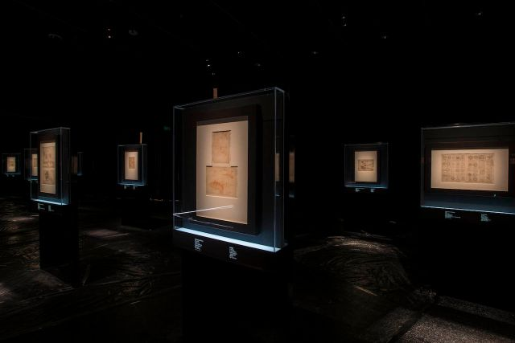
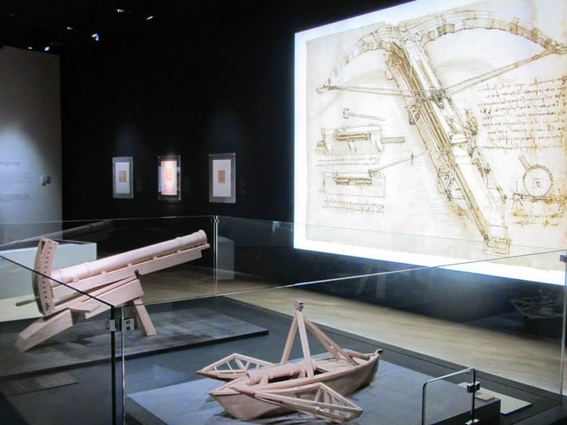
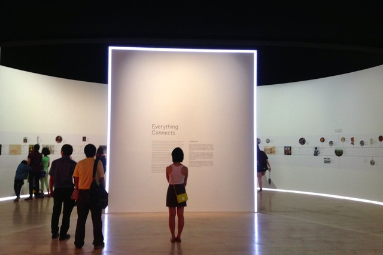
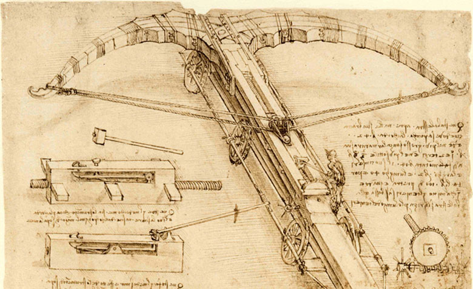
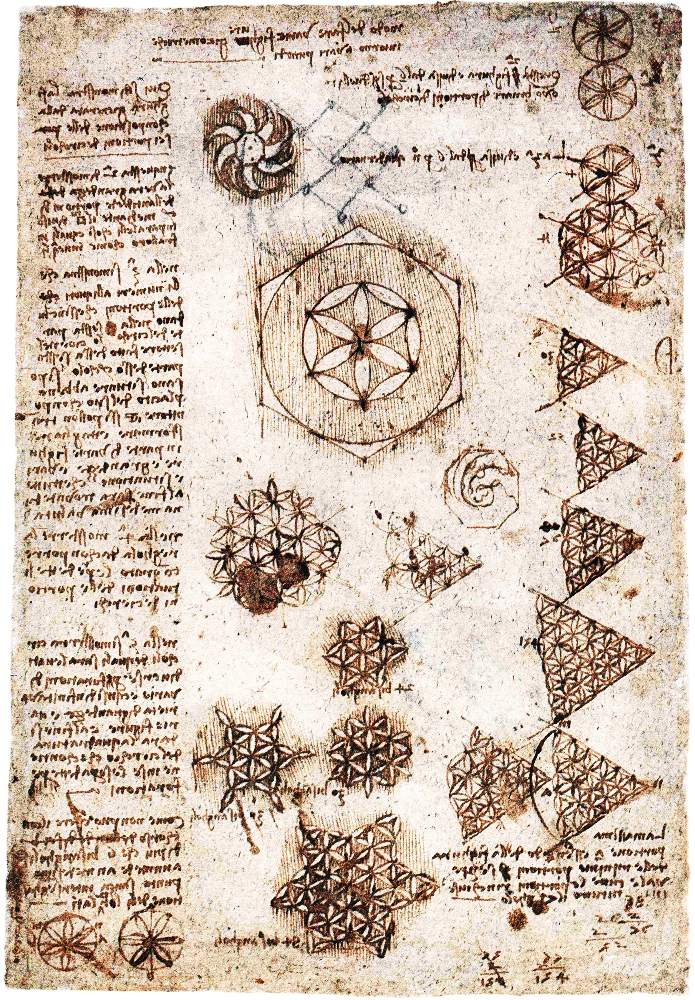
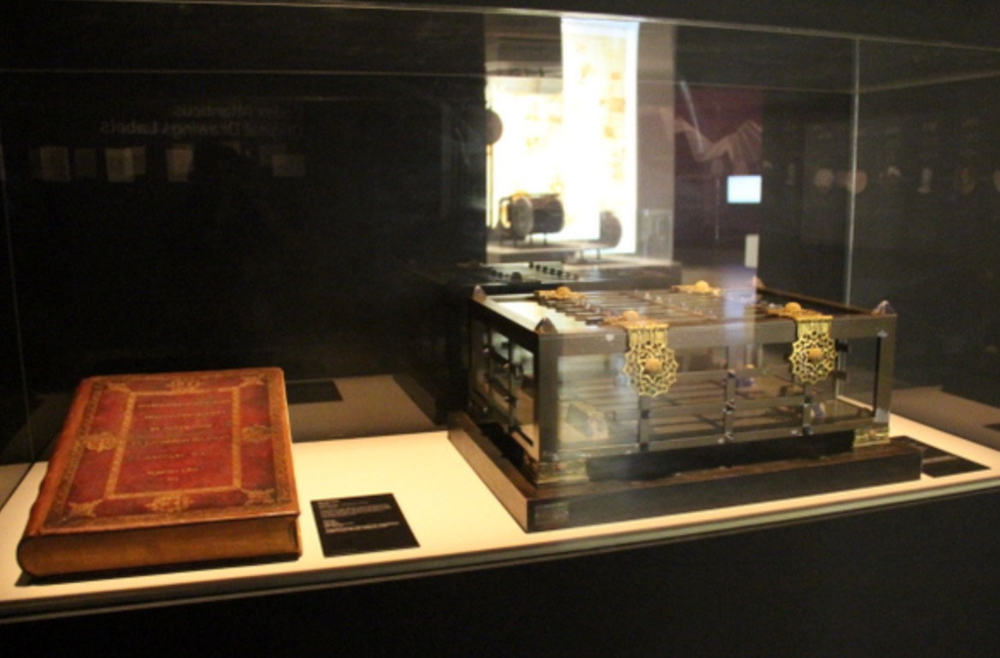
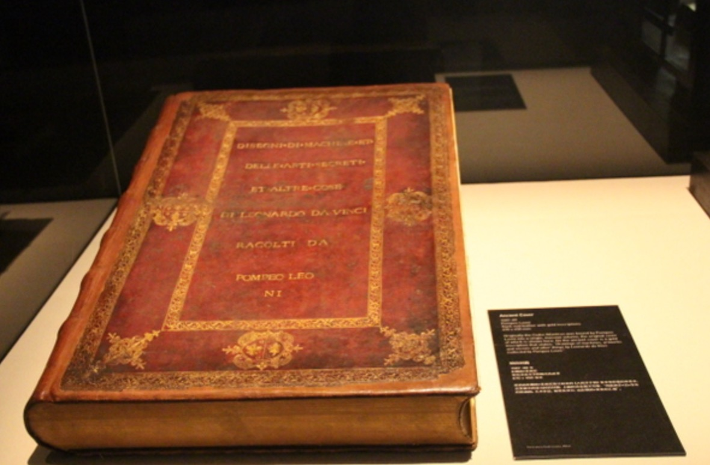
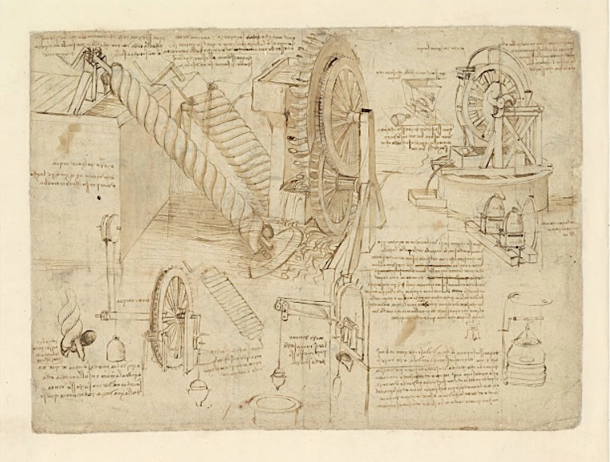
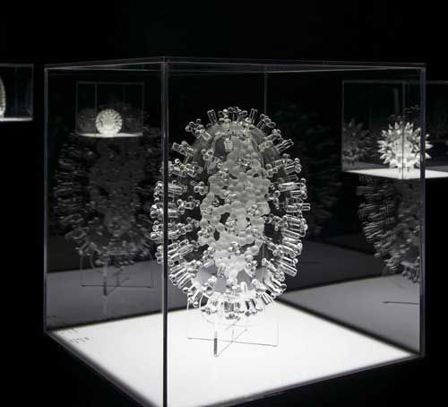

Da Vinci: Shaping the Future was the first exhibition of Leonardo da Vinci's original works in Southeast Asia, presenting 26 pages of the Codex Atlanticus, his largest surviving notebook, to audiences in Singapore for the first time. Co-produced with the Biblioteca Ambrosiana in Milan, the exhibition opened at ArtScience Museum in November 2014 and was the museum's inaugural major exhibition under Honor Harger's direction.
Spanning 3,000 square metres, the show was organised around five areas of Leonardo's practice: mathematics, natural sciences, architecture, technology, and music. Five contemporary artists were commissioned or selected to respond to his legacy: WY-TO on mathematics, Luke Jerram on natural sciences, Donna Ong on architecture, Semiconductor on technology, and Conrad Shawcross on music. Together they demonstrated that Leonardo's refusal to stop at the boundary of any discipline was not a historical curiosity but a living method.
The curatorial argument foregrounded Leonardo's systems thinking, his capacity to move between painting, anatomy, engineering, hydrology, and acoustics without losing coherence, as a model that remains urgently relevant today. At a time when the division of knowledge into disciplines can obscure the connections between them, Da Vinci: Shaping the Future made the case that the deepest problems we face require precisely Leonardo's kind of mind.

Co-curators
Honor Harger · Biblioteca Ambrosiana, Milan
Contemporary artists
WY-TO · Luke Jerram · Donna Ong · Semiconductor · Conrad Shawcross
Presented by
ArtScience Museum, Singapore · Biblioteca Ambrosiana, Milan








